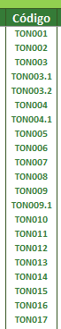

Seja bem vindo ao TI
Planilha de controle
Estoque - TI
-
1º passo: Cadastrar novos itens do estoque (caso ele não esteja cadastrado)
Na aba “Cadastro de Item” inserir:
- Novo número de item
- Novo código do item (padrão ser sempre 03 letras e 03 números, no caso de filiais da empresa usamos 03 letras + 03 números + .1 .2 .3 de acordo com o número da filial)

-
- Descrição do item (escolher na lista suspensa)
- Marca (escolher na lista suspensa)
- Estoque mínimo
- Unidade/Departamento (escolher na lista suspensa)
2º passo: Lançar entrada no estoque
Na aba “Entrada de itens” lançar a entrada de cada um deles no estoque
-
Data: Dia da entrada no estoque
Código: Escolher na lista suspensa, logo ao lado temos a relação de todos os códigos criados
Descrição do item, Marca e Unidade: Serão preenchidos automaticamente
Quantidade: Quantidade de entrada do item no estoque
3º passo: Lançar saída no estoque
Na aba “Saída de itens” lançar a saída de cada um deles no estoque
- Data: Dia de saída no estoque Código: Escolher na lista suspensa, logo ao lado temos a relação de todos os códigos criados Descrição do item e Marca: Serão preenchidos automaticamente Quantidade: Quantidade de saída do item no estoque 4º passo: Verificar a realidade do estoque na aba “Saldo” Nessa aba, automaticamente entradas e saídas de cada item são confrontados com o mínimo necessário e veremos a realidade do estoque.
-
Obs: Onde temos realidade de estoque em vermelho, é sinal de defasagem e quando temos a realidade de estoque em verde é o esperado.
5º passo: Análise de estoque
Essa planilha é preenchida automaticamente, baseada nas informações das abas anteriores e trazem de uma forma mais simples o que é necessário compra ou não para o TI